Section 3.5 Slope-Intercept Form
In this section, we will explore the most common way to write the equation of a line. It’s known as “slope-intercept form”.
Subsection 3.5.1 Slope-Intercept Definition
Recall Example 3.4.5, where Yara started with \(\$50\) in her savings account, and from then on deposited \(\$20\) each week. In that example, we used \(x\) to represent how many weeks have passed. After \(x\) weeks, Yara has added \(20x\) dollars. Since she started with \(\$50\text{,}\) she now has
\begin{equation*}
y=20x+50\text{.}
\end{equation*}
In this example, there is a constant rate of change of \(20\) dollars per week, so we call that the slope. We also saw in Figure 3.4.7 that plotting Yara’s balance over time makes a straight-line graph.
The graph of Yara’s savings has some things in common with almost every straight-line graph. There is a slope, and there is a place where the line crosses the \(y\)-axis. Figure 3 illustrates this in the abstract.
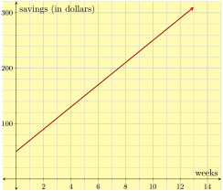
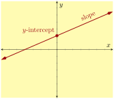
We already have a symbol, \(m\text{,}\) for the slope of a line. That other feature, where the line crosses the \(y\)-intercept is of interest to us now. The \(y\)-intercept of a line is a point where the line crosses the \(y\)-axis. Since it’s on the \(y\)-axis, the \(x\)-coordinate of this point is \(0\text{.}\) It is standard to call the point \((0,b)\) the \(y\)-intercept, and call the number \(b\) the “\(y\)-coordinate of the \(y\)-intercept”. It is almost inevitible that people will find this too wordy, and will call \(b\) the \(y\)-intercept. But technically, the \(y\)-intercept is \((0,b)\text{.}\)
Checkpoint 3.5.4.
Use Figure 3.4.7 to answer this question.
What was the value of \(b\) in the plot of Yara’s savings?
What is the \(y\)-intercept?
Explanation.
The line crosses the \(y\)-axis at \((0,50)\text{,}\) so the value of \(b\) is \(50\text{.}\) And the \(y\)-intercept is \((0,50)\text{.}\)
One way to write the equation for Yara’s savings was
\begin{equation*}
y=20x+50
\end{equation*}
where \(m=20\) and \(b=50\) are immediately visible in the equation. Now we generalize this.
Definition 3.5.5. Slope-Intercept Form.
When \(x\) and \(y\) have a linear relationship where \(m\) is the slope and \((0,b)\) is the \(y\)-intercept, one equation for this relationship is
\begin{equation}
y=mx+b\tag{3.5.1}
\end{equation}
and this equation is called the slope-intercept form of the line. It is called this because the slope and \(y\)-intercept are immediately discernible from the numbers in the equation.
Checkpoint 3.5.6.
What are the slope and \(y\)-intercept for each of the following line equations?
Equation |
Slope | \(y\)-intercept |
| \(y={3.1x+1.78}\) | ||
| \(y={-17x+112}\) | ||
| \(y={\frac{3}{7}x-\frac{2}{3}}\) | ||
| \(y={13-8x}\) | ||
| \(y={1-\frac{2x}{3}}\) | ||
| \(y={2x}\) | ||
| \(y={3}\) |
Explanation.
In the first three equations, simply read the slope \(m\) according to slope-intercept form. The slopes are \(3.1\text{,}\) \(-17\text{,}\) and \({\frac{3}{7}}\text{.}\)
The fourth equation was written with the terms not in the slope-intercept form order. It could be written \(y=-8x+13\text{,}\) and then it is clear that its slope is \(-8\text{.}\) In any case, the slope is the coefficient of \(x\text{.}\)
The fifth equation is also written with the terms not in the slope-intercept form order. Changing the order of the terms, it could be written \(y=-\frac{2x}{3}+1\text{,}\) but this still does not match the pattern of slope-intercept form. Considering how fraction multiplication works, \(\frac{2x}{3}=\frac{2}{3}\cdot\frac{x}{1}=\frac{2}{3}x\text{.}\) So we can write this equation as \(y=-\frac{2}{3}x+1\text{,}\) and we see the slope is \(-\frac{2}{3}\text{.}\)
The last two equations could be written \(y=2x+0\) and \(y=0x+3\text{,}\) allowing us to read their slopes as \(2\) and \(0\text{.}\)
For the \(y\)-intercepts, remember that we are expected to answer using an ordered pair \((0,b)\text{,}\) not just a single number \(b\text{.}\) We can simply read that the first two \(y\)-intercepts are \({\left(0,1.78\right)}\) and \({\left(0,112\right)}\text{.}\)
The third equation does not exactly match the slope-intercept form, until you view it as \(y=\frac{3}{7}x+\left(-\frac{2}{3}\right)\text{,}\) and then you can see that its \(y\)-intercept is \(\left(0,-\frac{2}{3}\right)\text{.}\)
With the fourth equation, after rewriting it as \(y=-8x+13\text{,}\) we can see that its \(y\)-intercept is \((0,13)\text{.}\)
We already explored rewriting the fifth equation as \(y=-\frac{2}{3}x+1\text{,}\) where we can see that its \(y\)-intercept is \((0,1)\text{.}\)
The last two equations could be written \(y=2x+0\) and \(y=0x+3\text{,}\) allowing us to read their \(y\)-intercepts as \((0,0)\) and \((0,3)\text{.}\)
Alternatively, we know that \(y\)-intercepts happen where \(x=0\text{,}\) and substituting \(x=0\) into each equation gives you the \(y\)-value of the \(y\)-intercept.
Remark 3.5.7.
The number \(b\) is the \(y\)-value when \(x=0\text{.}\) Therefore it is common to refer to \(b\) as the initial value or starting value of a linear relationship.
Subsection 3.5.2 Graphing Slope-Intercept Equations
Example 3.5.8.
With a simple equation like \(y=2x+3\text{,}\) we can see that this is a line whose slope is \(2\) and which has initial value \(3\text{.}\) So starting at \(y=3\) on the \(y\)-axis, each time we increase the \(x\)-value by \(1\text{,}\) the \(y\)-value increases by \(2\text{.}\) With these basic observations, we can quickly produce a table and/or a graph.
| \(x\) | \(y\) | ||
| start on \(y\)-axis \(\longrightarrow\) |
\(0\) | \(3\) | initial \(\longleftarrow\) value |
| increase by \(1\longrightarrow\) |
\(1\) | \(5\) | increase \(\longleftarrow\) by \(2\) |
| increase by \(1\longrightarrow\) |
\(2\) | \(7\) | increase \(\longleftarrow\) by \(2\) |
| increase by \(1\longrightarrow\) |
\(3\) | \(9\) | increase \(\longleftarrow\) by \(2\) |
| increase by \(1\longrightarrow\) |
\(4\) | \(11\) | increase \(\longleftarrow\) by \(2\) |
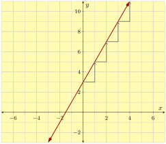
Example 3.5.9.
The conversion formula for a Celsius temperature into Fahrenheit is \(F=\frac{9}{5}C+32\text{.}\) This appears to be in slope-intercept form, except that \(x\) and \(y\) are replaced with \(C\) and \(F\text{.}\) Suppose you are asked to graph this equation. How will you proceed? You could make a table of values as we did in Example 8 but that takes time and effort. Since the equation is in slope-intercept form, there is a better way.
Since this equation is for converting a Celsius temperature to a Fahrenheit temperature, it makes sense to let \(C\) be the horizontal axis variable and \(F\) be the vertical axis variable. Note the slope is \(\frac{9}{5}\) and the vertical intercept (here, the \(F\)-intercept) is \((0,32)\text{.}\)
- Set up the axes using an appropriate window and labels. Considering the freezing temperature of water (\(0^{\circ}\) Celsius or \(32^{\circ}\) Fahrenheit), and the boiling temperature of water (\(100^{\circ}\) Celsius or \(212^{\circ}\) Fahrenheit), it’s reasonable to let \(C\) run through at least \(0\) to \(100\) and \(F\) run through at least \(32\) to \(212\text{.}\)
- Plot the \(F\)-intercept, which is at \((0,32)\text{.}\)
- Starting at the \(F\)-intercept, use slope triangles to reach the next point. Since our slope is \(\frac{9}{5}\text{,}\) that suggests a “run” of \(5\) and a “rise” of \(9\) might work. But as Figure 10 indicates, such slope triangles are too tiny. You can actually use any fraction equivalent to \(\frac{9}{5}\) to plot using the slope, as in \(\frac{18}{10}\text{,}\) \(\frac{90}{50}\text{,}\) \(\frac{900}{50}\text{,}\) or \(\frac{45}{25}\) which all reduce to \(\frac{9}{5}\text{.}\) Given the size of our graph, we will use \(\frac{90}{50}\) to plot points, where we will try a “run” of \(50\) and a “rise” of \(90\text{.}\)
- Connect your points with a straight line, use arrowheads, and label the equation.
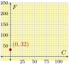
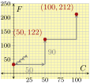
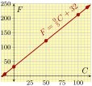
Example 3.5.11.
Graph \(y=-\frac{2}{3}x+10\text{.}\)
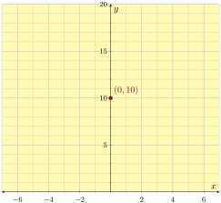
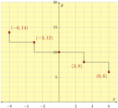
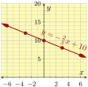
Checkpoint 3.5.13.
Graph \(y=3x+5\text{.}\)
Explanation.
Mark the \(y\)-intercept at \((0,5)\text{,}\) and then use slope triangles that travel forward \(1\) unit and up \(3\text{.}\)
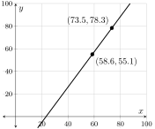
Subsection 3.5.3 Writing a Slope-Intercept Equation Given a Graph
We can write a linear equation in slope-intercept form based on its graph. We need to be able to calculate the line’s slope and see its \(y\)-intercept.
Checkpoint 3.5.14.
Use the graph to write an equation of the line in slope-intercept form.
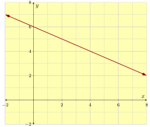
Explanation.
On the line, pick two points with easy-to-read integer coordinates so that we can calculate slope. It doesn’t matter which two points we use; the slope will be the same.
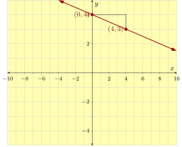
Using the slope triangle, we can calculate the line’s slope:
\begin{equation*}
\text{slope}=\frac{\Delta y}{\Delta x}=\frac{-2}{4}=-\frac{1}{2}
\text{.}
\end{equation*}
From the graph, we can see the \(y\)-intercept is \((0,6)\text{.}\)
With the slope and \(y\)-intercept found, we can write the line’s equation:
\begin{equation*}
y=-\frac{1}{2}x+6
\text{.}
\end{equation*}
Checkpoint 3.5.15.
The boiling temperature of water depends on what the surrounding air pressure is. Scientists measured the boiling point of water under various amounts of pressure and plotted the results below. Then they added a “line of best fit”.
Write an equation for this line in slope-intercept form.
Explanation.
Do your best to identify two points on the line. We go with \((0,90)\) and \((3,130)\text{.}\)
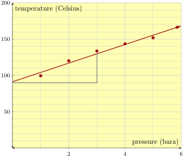
\begin{equation*}
\frac{\Delta y}{\Delta x}=\frac{130-90}{3-0}=\frac{40}{3}\approx13.3
\end{equation*}
So the slope is about \(13.3\) degrees Celsius per bara. This is only an estimate since we are not certain the two points we chose are actually on the line.
Estimating the \(y\)-intercept to be at \((0,90)\text{,}\) we have \(y=13.3x+90\text{.}\)
Subsection 3.5.4 Writing a Slope-Intercept Equation Given Two Points
Any two points uniquely determine a line. Once you identify two points, there is a process to find the slope-intercept form of the equation of the line that connects them.
Example 3.5.16.
Find the slope-intercept form of an equation for the line that passes through the points \((0,5)\) and \((8,-5)\text{.}\)
Explanation.
Our goal is to write \(y=mx+b\text{,}\) with specific numbers for \(m\) and \(b\text{.}\) The first step is to find the slope, \(m\text{.}\) To do this, recall the slope formula from Section 4. It says that if a line passes through the points \((x_1,y_1)\) and \((x_2,y_2)\text{,}\) then the slope is found by the formula \(m=\frac{y_2-y_1}{x_2-x_1}\text{.}\)
Applying this to our two points \((\overset{x_1}{0},\overset{y_1}{5})\) and \((\overset{x_2}{8},\overset{y_2}{-5})\text{,}\) we see that the slope is:
\begin{align*}
m\amp=\frac{y_2-y_1}{x_2-x_1}\\
\amp=\frac{\substitute{-5}-\substitute{5}}{\substitute{8}-\substitute{0}}\\
\amp=\frac{-10}{8}=-\frac{5}{4}
\end{align*}
We are trying to write \(y=mx+b\text{.}\) Since we already found the slope, we know that we want to write \(y=-\frac{5}{4}x+b\) but we need a specific number for \(b\text{.}\) We happen to know that one point on this line is \((0,5)\text{,}\) which is on the \(y\)-axis because its \(x\)-value is \(0\text{.}\) So \((0,5)\) is this line’s \(y\)-intercept, and therefore \(b=5\text{.}\) So our equation is \(y=-\frac{5}{4}x+5\text{.}\)
Example 3.5.17.
Find the slope-intercept form of an equation for the line that passes through the points \((3,-8)\) and \((-6,1)\text{.}\)
Explanation.
We first find the slope between our two points: \((\overset{x_1}{3},\overset{y_1}{-8})\) and \((\overset{x_2}{-6},\overset{y_2}{1})\text{.}\) Using the slope formula again, we have:
\begin{align*}
m\amp=\frac{y_2-y_1}{x_2-x_1}\\
\amp=\frac{\substitute{1}-\substitute{(-8)}}{\substitute{{-}6}-\substitute{3}}\\
\amp=\frac{9}{-9}\\
\amp=-1
\end{align*}
Now that we have the slope, we can write \(y=-1x+b\text{,}\) or more simply: \(y=-x+b\text{.}\) Unlike in Example 16, we are not given the value of \(b\) because neither of our two given points have an \(x\)-value of \(0\text{.}\) To find \(b\text{,}\) remember that we have two points that we already know should make the equation true! This means we can substitute either point into the equation (for the \(x\) and the \(y\)) and solve for \(b\text{.}\) Let’s arbitrarily choose \((3,-8)\) to substitute in.
\begin{align*}
y\amp=-x+b\\
\substitute{-8}\amp=-(\substitute{3})+b\amp\text{(Now solve for }b\text{.)}\\
-8\amp=-3+b\\
-8\addright{3}\amp=-3+b\addright{3}\\
-5\amp=b
\end{align*}
We conclude that the slope-intercept line equation is \(y=-x-5\text{.}\)
Checkpoint 3.5.18.
Find the slope-intercept form of an equation for the line that passes through the points \((-3,150)\) and \((0,30)\text{.}\)
Explanation.
We first find the slope between our two points: \((\overset{x_1}{-3},\overset{y_1}{150})\) and \((\overset{x_2}{0},\overset{y_2}{30})\text{.}\) Using the slope formula, we have:
\begin{equation*}
\begin{aligned}
m\amp=\frac{y_2-y_1}{x_2-x_1}\\
\amp=\frac{\substitute{30}-\substitute{150}}{\substitute{0}-\substitute{(-3)}}\\
\amp=\frac{-120}{3}\\
\amp=-40
\end{aligned}
\end{equation*}
Now we can write \(y=-40x+b\) and to find \(b\) we need look no further than one of the given points: \((0,30)\text{.}\) The value of \(b\) is \(30\text{.}\) So, the slope-intercept form of the line is \(y=-40x+30\text{.}\)
Checkpoint 3.5.19.
Find the slope-intercept form of an equation for the line that passes through the points \(\left(-3,\frac{3}{4}\right)\) and \(\left(-6,-\frac{17}{4}\right)\text{.}\)
Explanation.
First find the slope through our points: \(\left(-3,\frac{3}{4}\right)\) and \(\left(-6,-\frac{17}{4}\right)\text{.}\)
\begin{equation*}
\begin{aligned}
m\amp=\frac{y_2-y_1}{x_2-x_1}\\
\amp=\frac{\substitute{-\frac{17}{4}}-\substitute{\frac{3}{4}}}{\substitute{-6}-\substitute{(-3)}}\\
\amp=\frac{\frac{-20}{4}}{-3}\\
\amp=\frac{-5}{-3}\\
\amp=\frac{5}{3}
\end{aligned}
\end{equation*}
At this point we have \(y=\frac{5}{3}x+b\text{.}\) Now we need to solve for \(b\) since neither of the points given to us were the vertical intercept. To do this, we choose one of the two points and plug it into our equation. We choose \(\left(-3,\frac{3}{4}\right)\text{.}\)
\begin{equation*}
\begin{aligned}
y\amp=\frac{5}{3}x+b\\
\substitute{\frac{3}{4}}\amp=\frac{5}{3}(\substitute{-3})+b\\
\frac{3}{4}\amp=-5+b\\
\frac{3}{4}\addright{5}\amp=-5+b\addright{5}\\
\frac{3}{4}+\frac{20}{4}\amp=b\\
\frac{23}{4}\amp=b
\end{aligned}
\end{equation*}
So we have \(y=\frac{5}{3}x+\frac{23}{4}\text{.}\)
Subsection 3.5.5 Modeling with Slope-Intercept Form
We can model many relationships using slope-intercept form, and then solve related questions using algebra. Here are a few examples.
Example 3.5.20.
Uber is a ride-sharing company. Its pricing in Portland factors in how much time and how many miles a trip takes. But if you assume that rides average out at a speed of 30 mph, then their pricing scheme boils down to a base of \(\$7.35\) for the trip, plus \(\$3.85\) per mile. Use a slope-intercept equation and algebra to answer these questions.
- How much is the fare if a trip is \(5.3\) miles long?
- With \(\$100\) available to you, how long of a trip can you afford?
Explanation.
The rate of change (slope) is \(\$3.85\) per mile, and the starting value is \(\$7.35\text{.}\) So the slope-intercept equation is
\begin{equation*}
y=3.85x+7.35\text{.}
\end{equation*}
In this equation, \(x\) stands for the number of miles in a trip, and \(y\) stands for the amount of money to be charged.
If a trip is \(5.3\) miles long, we substitute \(x=5.3\) into the equation and we have:
\begin{align*}
y\amp=3.85x+7.35\\
\amp=3.85(\substitute{5.3})+7.35\\
\amp=20.405+7.35\\
\amp=27.755
\end{align*}
And the \(5.3\)-mile ride will cost you about \(\$27.76\text{.}\) (We say “about,” because this was all assuming you average 30 mph.)
Next, to find how long of a trip would cost \(\$100\text{,}\) we substitute \(y=100\) into the equation and solve for \(x\text{:}\)
\begin{align*}
y\amp=3.85x+7.35\\
\substitute{100}\amp=3.85x+7.35\\
100\subtractright{7.35}\amp=3.85x\\
92.65\amp=3.85x\\
\divideunder{92.65}{3.85}\amp=x\\
24.06\amp\approx x
\end{align*}
So with \(\$100\) you could afford a little more than a \(24\)-mile trip.
Checkpoint 3.5.21.
In a certain wildlife reservation in Africa, there are approximately \(2400\) elephants. Sadly, the population has been decreasing by \(30\) elephants per year. Use a slope-intercept equation and algebra to answer these questions.
- If the trend continues, what would the elephant population be \(15\) years from now?
- If the trend continues, how many years will it be until the elephant population dwindles to \(1200\text{?}\)
Explanation.
The rate of change (slope) is \(-30\) elephants per year. Notice that since we are losing elephants, the slope is a negative number. The starting value is \(2400\) elephants. So the slope-intercept equation is
\begin{equation*}
y=-30x+2400
\text{.}
\end{equation*}
In this equation, \(x\) stands for a number of years into the future, and \(y\) stands for the elephant population. To estimate the elephant population \(15\) years later, we substitute \(x\) in the equation with \(15\text{,}\) and we have:
\begin{equation*}
\begin{aligned}
y\amp=-30x+2400\\
\amp=-30(\substitute{15})+2400\\
\amp=-450+2400\\
\amp=1950
\end{aligned}
\end{equation*}
So if the trend continues, there would be \(1950\) elephants on this reservation 15 years later.
Next, to find when the elephant population would decrease to \(1200\text{,}\) we substitute \(y\) in the equation with \(1200\text{,}\) and solve for \(x\text{:}\)
\begin{equation*}
\begin{aligned}
y\amp=-30x+2400\\
\substitute{1200}\amp=-30x+2400\\
1200\subtractright{2400}\amp=-30x\\
-1200\amp=-30x\\
\divideunder{-1200}{-30}\amp=x\\
40\amp=x
\end{aligned}
\end{equation*}
So if the trend continues, \(40\) years later, the elephant population would dwindle to \(1200\text{.}\)
Reading Questions 3.5.6 Reading Questions
1.
How does “slope-intercept form” get its name?
2.
What are two phrases you can use for “\(b\)” in a slope-intercept form line equation?
3.
Explain the two basic steps to graphing a line when you have the equation in slope-intercept form. (Not counting the step where you draw and label the axes and ticks.)
Exercises 3.5.7 Exercises
Skills Practice
Identifying Slope and \(y\)-Intercept.
Find the line’s slope and \(y\)-intercept.
1.
\(y={6x+7}\)
Answer 1.
\(6\)
Answer 2.
\(\left(0,7\right)\)
2.
\(y={7x+3}\)
Answer 1.
\(7\)
Answer 2.
\(\left(0,3\right)\)
3.
\(y={-3x-2}\)
Answer 1.
\(-3\)
Answer 2.
\(\left(0,-2\right)\)
4.
\(y={-2x-6}\)
Answer 1.
\(-2\)
Answer 2.
\(\left(0,-6\right)\)
5.
\(y={x+9}\)
Answer 1.
\(1\)
Answer 2.
\(\left(0,9\right)\)
6.
\(y={x-7}\)
Answer 1.
\(1\)
Answer 2.
\(\left(0,-7\right)\)
7.
\(y={-x-5}\)
Answer 1.
\(-1\)
Answer 2.
\(\left(0,-5\right)\)
8.
\(y={-x-3}\)
Answer 1.
\(-1\)
Answer 2.
\(\left(0,-3\right)\)
9.
\(y={{\frac{8}{3}}x-1}\)
Answer 1.
\({\frac{8}{3}}\)
Answer 2.
\(\left(0,-1\right)\)
10.
\(y={{\frac{5}{2}}x+1}\)
Answer 1.
\({\frac{5}{2}}\)
Answer 2.
\(\left(0,1\right)\)
11.
\(y={-6.8x+3}\)
Answer 1.
\(-6.8\)
Answer 2.
\(\left(0,3\right)\)
12.
\(y={5.6x+5}\)
Answer 1.
\(5.6\)
Answer 2.
\(\left(0,5\right)\)
13.
\(y={5+9x}\)
Answer 1.
\(9\)
Answer 2.
\(\left(0,5\right)\)
14.
\(y={2+9x}\)
Answer 1.
\(9\)
Answer 2.
\(\left(0,2\right)\)
15.
\(y={8-2x}\)
Answer 1.
\(-2\)
Answer 2.
\(\left(0,8\right)\)
16.
\(y={5-3x}\)
Answer 1.
\(-3\)
Answer 2.
\(\left(0,5\right)\)
Graphs and Slope-Intercept Form.
In the given graph, what is the line’s slope-intercept equation?
17.
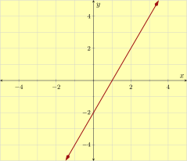
Answer.
\(y = 2x-2\)
18.
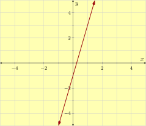
Answer.
\(y = 4x-1\)
19.
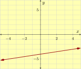
Answer.
\(y = {\frac{1}{6}}x-1\)
20.
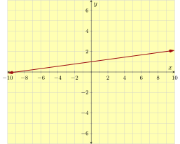
Answer.
\(y = {\frac{1}{9}}x+1\)
21.

Answer.
\(y = x+2\)
22.
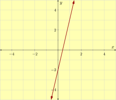
Answer.
\(y = x+3\)
23.
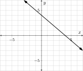
Answer.
\(y = x+4\)
24.
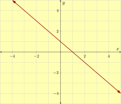
Answer.
\(y = x-4\)
25.
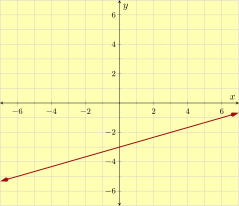
Answer.
\(y = {\frac{1}{3}}x-3\)
26.
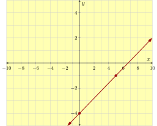
Answer.
\(y = {\frac{2}{3}}x-2\)
27.
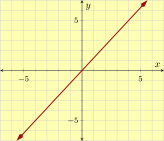
Answer.
\(y = -{\frac{2}{3}}x\)
28.
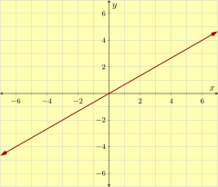
Answer.
\(y = {\frac{2}{3}}x\)
Graph Equations.
Graph the equation.
29.
\({y = 4x-5}\)
Answer.
\(\left\{\text{line}, \text{solid}, \left(0,-5\right), \left(1,-1\right)\right\}\)
30.
\({y = 5x+3}\)
Answer.
\(\left\{\text{line}, \text{solid}, \left(0,3\right), \left(1,8\right)\right\}\)
31.
\({y = -5x-2}\)
Answer.
\(\left\{\text{line}, \text{solid}, \left(0,-2\right), \left(1,-7\right)\right\}\)
32.
\({y = -5x-4}\)
Answer.
\(\left\{\text{line}, \text{solid}, \left(0,-4\right), \left(1,-9\right)\right\}\)
33.
\({y = -{\frac{1}{2}}x+4}\)
Answer.
\(\left\{\text{line}, \text{solid}, \left(0,4\right), \left(-2,5\right)\right\}\)
34.
\({y = -{\frac{1}{2}}x-3}\)
Answer.
\(\left\{\text{line}, \text{solid}, \left(0,-3\right), \left(-2,-2\right)\right\}\)
35.
\({y = {\frac{1}{3}}x+5}\)
Answer.
\(\left\{\text{line}, \text{solid}, \left(0,5\right), \left(3,6\right)\right\}\)
36.
\({y = {\frac{1}{3}}x-4}\)
Answer.
\(\left\{\text{line}, \text{solid}, \left(0,-4\right), \left(3,-3\right)\right\}\)
37.
\({y = {\frac{6}{5}}x}\)
Answer.
\(\left\{\text{line}, \text{solid}, \left(0,0\right), \left(5,6\right)\right\}\)
38.
\({y = {\frac{7}{4}}x}\)
Answer.
\(\left\{\text{line}, \text{solid}, \left(0,0\right), \left(4,7\right)\right\}\)
39.
\({y = {\frac{7}{9}}x-1}\)
Answer.
\(\left\{\text{line}, \text{solid}, \left(0,-1\right), \left(9,6\right)\right\}\)
40.
\({y = {\frac{9}{2}}x-5}\)
Answer.
\(\left\{\text{line}, \text{solid}, \left(0,-5\right), \left(2,4\right)\right\}\)
41.
\({y = x+9}\)
Answer.
\(\left\{\text{line}, \text{solid}, \left(0,9\right), \left(1,10\right)\right\}\)
42.
\({y = x-8}\)
Answer.
\(\left\{\text{line}, \text{solid}, \left(0,-8\right), \left(1,-7\right)\right\}\)
43.
\({y = -x-6}\)
Answer.
\(\left\{\text{line}, \text{solid}, \left(0,-6\right), \left(1,-7\right)\right\}\)
44.
\({y = -x-3}\)
Answer.
\(\left\{\text{line}, \text{solid}, \left(0,-3\right), \left(1,-4\right)\right\}\)
45.
\({y = -{\frac{5}{6}}x-2}\)
Answer.
\(\left\{\text{line}, \text{solid}, \left(0,-2\right), \left(6,-7\right)\right\}\)
46.
\({y = -{\frac{6}{5}}x+5}\)
Answer.
\(\left\{\text{line}, \text{solid}, \left(0,5\right), \left(5,-1\right)\right\}\)
47.
\({y = 0.3x+2}\)
Answer.
\(\left\{\text{line}, \text{solid}, \left(0,2\right), \left(10,5\right)\right\}\)
48.
\({y = 0.5x-4}\)
Answer.
\(\left\{\text{line}, \text{solid}, \left(0,-4\right), \left(10,1\right)\right\}\)
Writing a Slope-Intercept Equation Given Two Points.
A line passes through the two given points. Find the line’s equation in slope-intercept form.
49.
\({\left(1,16\right)}\) and \({\left(7,70\right)}\)
Answer.
\(y = 9x+7\)
50.
\({\left(4,33\right)}\) and \({\left(5,39\right)}\)
Answer.
\(y = 6x+9\)
51.
\({\left(1,-11\right)}\) and \({\left(8,-32\right)}\)
Answer.
\(y = -3x-8\)
52.
\({\left(3,-30\right)}\) and \({\left(8,-70\right)}\)
Answer.
\(y = -8x-6\)
53.
\({\left(-5,-34\right)}\) and \({\left(7,38\right)}\)
Answer.
\(y = 6x-4\)
54.
\({\left(-2,-7\right)}\) and \({\left(4,11\right)}\)
Answer.
\(y = 3x-1\)
55.
\({\left(35,41\right)}\) and \({\left(63,73\right)}\)
Answer.
\(y = {\frac{8}{7}}x+1\)
56.
\({\left(48,33\right)}\) and \({\left(72,48\right)}\)
Answer.
\(y = {\frac{5}{8}}x+3\)
57.
\({\left(-24,23\right)}\) and \({\left(-20,20\right)}\)
Answer.
\(y = -{\frac{3}{4}}x+5\)
58.
\({\left(-24,71\right)}\) and \({\left(-6,23\right)}\)
Answer.
\(y = -{\frac{8}{3}}x+7\)
59.
\({\left(-102,15\right)}\) and \({\left(136,211\right)}\)
Answer.
\(y = {\frac{14}{17}}x+99\)
60.
\({\left(26,49\right)}\) and \({\left(39,60\right)}\)
Answer.
\(y = {\frac{11}{13}}x+27\)
61.
\({\left(-9.1,-46.45\right)}\) and \({\left(-3.3,-20.35\right)}\)
Answer.
\(y = 4.5x-5.5\)
62.
\({\left(-8.8,12.34\right)}\) and \({\left(-0.8,-2.06\right)}\)
Answer.
\(y = -1.8x-3.5\)
Applications
63.
A gym charges members \({\$30}\) for a registration fee, and then \({\$20}\) per month. You became a member some time ago, and now you have paid a total of \({\$410}\) to the gym. How many months have passed since you joined the gym?
months have passed since you joined the gym.
Answer.
\(19\)
Explanation.
Let \(x\) be the number of months since you became a member of the gym.
If you pay \({\$20}\) per month, you would pay \(20 \cdot x\) dollars for \(x\) months. In addition, you paid \({\$30}\) up front.
Now we can write an equation:
\(\displaystyle{ 30+20x = 410 }\)
Next, we solve for \(x\text{:}\)
\(\begin{aligned}
30 +20x \amp = 410 \\
30 +20x\mathbf{{} -30} \amp = 410\mathbf{{} -30} \\
20x \amp = 380 \\
\frac{20x}{20} \amp = \frac{380}{20} \\
x \amp = 19
\end{aligned}\)
\(19\) months have passed since you joined the gym.
64.
Your cell phone company charges a \({\$21}\) monthly fee, plus \({\$0.17}\) per minute of talk time. One month your cell phone bill was \({\$82.20}\text{.}\) How many minutes did you spend talking on the phone that month?
You spent talking on the phone that month.
Answer.
\(360\ {\rm min}\)
Explanation.
Let \(x\) be the number of minutes you talked on the phone that month.
You must pay \({\$0.17}\) per minute of talk time. If you talked \(x\) minutes, you would pay \(0.17x\) dollars.
Now we can write an equation:
\(\displaystyle{ 21+0.17x = 82.2 }\)
Next, we solve for \(x\text{:}\)
\(\begin{aligned}
21 +0.17x \amp = 82.2 \\
21 +0.17x\mathbf{{}-21} \amp = 82.2\mathbf{{}-21} \\
0.17x \amp = 61.2 \\
\frac{0.17x}{0.17} \amp = \frac{61.2}{0.17} \\
x \amp = 360
\end{aligned}\)
You spent \({360\ {\rm min}}\) talking on the phone in that month.
65.
A school purchased a batch of T-shirts from a company. The company charged \({\$8}\) per T-shirt, and gave the school a \({\$65}\) rebate. If the school had a net expense of \({\$3{,}455}\) from the purchase, how many T-shirts did the school buy?
The school purchased T-shirts.
Answer.
\(440\)
Explanation.
Let \(x\) be the number of T-shirts the school purchased.
Each T-shirt costs \({\$8}\text{,}\) so \(x\) T-shirts cost \(8x\) dollars. After that expense, there was a rebate of 65 dollars.
Now we can write an equation:
\(\displaystyle{ 8x-65 = 3455 }\)
Next, we solve for \(x\text{:}\)
\(\begin{aligned}
8x -65 \amp = 3455 \\
8x -65\mathbf{{}+65} \amp = 3455\mathbf{{}+65} \\
8x \amp = 3520 \\
\frac{8x}{8} \amp = \frac{3520}{8} \\
x \amp = 440
\end{aligned}\)
The school purchased \(440\) T-shirts.
66.
Alyson hired a face-painter for a birthday party. The painter charged a flat fee of \({\$90}\text{,}\) and then charged \({\$2.50}\) per person. In the end, Alyson paid a total of \({\$120}\text{.}\) How many people used the face-painter’s service?
people used the face-painter’s service.
Answer.
\(12\)
Explanation.
Let \(x\) be the number of people who used the face-painter’s service.
The charge for each person was \({\$2.50}\text{,}\) so the charge for \(x\) people was \(2.5x\) dollars. There was also a flat fee of \({\$90}\text{.}\)
Now we can write an equation:
\(\displaystyle{ 2.5x+90 = 120 }\)
Next, we solve for \(x\text{:}\)
\(\begin{aligned}
2.5x +90 \amp = 120 \\
2.5x +90\mathbf{{} -90} \amp = 120\mathbf{{} -90} \\
2.5x \amp = 30 \\
\frac{2.5x}{2.5} \amp = \frac{30}{2.5} \\
x \amp = 12
\end{aligned}\)
So twelve people used the face-painter’s service.
67.
A certain country has \(726.6\) million acres of forest. Every year, the country loses \(8.65\) million acres of forest mainly due to deforestation for farming purposes. If this situation continues at this pace, how many years later will the country have only \(467.1\) million acres of forest left? (Use an equation to solve this problem.)
After years, this country would have \(467.1\) million acres of forest left.
Answer.
\(30\)
Explanation.
Assume after \(y\) years, this country will have \(467.1\) million acres of forest left.
The country loses \(8.65\) million acres of forest every year. In \(y\) years, the country will lose a total of \(8.65y\) million acres of forest.
Currently, the country has \(726.6\) million acres of forest. In \(y\) years, with a loss of \(8.65y\) million acres, there would be \(726.6-8.65y\) million acres of forest left.
The question asks when there would be \(467.1\) million acres of forest left. Now we can write an equation:
\(\displaystyle{ 726.6-8.65y = 467.1 }\)
Next, we solve for \(y\text{:}\)
\(\begin{aligned}
726.6-8.65y \amp = 467.1 \\
726.6-8.65y \mathbf{{}-726.6} \amp = 467.1 \mathbf{{}-726.6} \\
-8.65y \amp = -259.5 \\
\frac{-8.65y}{-8.65} \amp = \frac{-259.5}{-8.65} \\
y \amp = {30}
\end{aligned}\)
After \({30}\) years, this country would have \(467.1\) million acres of forest left.
68.
Tien has \({\$90}\) in his piggy bank. He plans to purchase some Pokemon cards, which costs \({\$1.95}\) each. He plans to save \({\$68.55}\) to purchase another toy. At most how many Pokemon cards can he purchase?
Write an equation to solve this problem.
Tien can purchase at most Pokemon cards.
Answer.
\(11\)
Explanation.
Assume Tien can purchase \(x\) Pokemon cards.
Each card costs \({\$1.95}\text{,}\) so \(x\) cards will cost \(1.95x\) dollars.
Currently, Tien has \({\$90}\) in his piggy bank. After spending \(1.95x\) dollars, he would have \(90-1.95x\) dollars left.
Tien will keep \({\$68.55}\) unspent. Now we can write an equation:
\(\displaystyle{ 90-1.95x = 68.55 }\)
Next, we solve for \(x\text{:}\)
\(\begin{aligned}
90-1.95x \amp = 68.55 \\
90-1.95x \mathbf{{}-90} \amp = 68.55 \mathbf{{}-90} \\
-1.95x \amp = -21.45 \\
\frac{-1.95x}{-1.95} \amp = \frac{-21.45}{-1.95} \\
x \amp = 11
\end{aligned}\)
Tien can purchase at most \(11\) Pokemon cards.
69.
By your cell phone contract, you pay a monthly fee plus \({\$0.03}\) for each minute you spend on the phone. In one month, you spent \(240\) minutes over the phone, and had a bill totaling \({\$26.20}\text{.}\)
Let \(x\) be the number of minutes you spend on the phone in a month, and let \(y\) be your total cell phone bill for that month, in dollars. Use a linear equation to model your monthly bill based on the number of minutes you spend on the phone.
- This line’s slope-intercept equation is .
- If you spend \(200\) minutes on the phone in a month, you would be billed .
- If your bill was \({\$32.50}\) one month, you must have spent minutes on the phone in that month.
Answer 1.
\(y = 0.03x+19\)
Answer 2.
\(\$25.00\)
Answer 3.
\(450\)
Explanation.
-
A line’s equation in slope-intercept form looks like \(y=mx+b\text{,}\) where \(m\) is the slope, and \(y\) is the \(y\)-coordinate of the \(y\)-intercept. The slope of the linear model has been given to us: \({\$0.03}\) per minute.So now we have that \(y=0.03x+b\text{.}\) The next step is to find the value of \(b\text{.}\) There are at least two ways.One way is to substitute a given point into \(y={0.03x}+b\text{.}\) We have the point \((240,26.2)\text{.}\)\(\begin{aligned} y \amp = {0.03x} + b \\ 26.2 \amp = 0.03 \cdot 240 + b \\ 26.2 \amp = 7.2 + b \\ 26.2\mathbf{{}-7.2} \amp = 7.2 + b\mathbf{{}-7.2} \\ 19 \amp = b\\ b \amp = 19 \end{aligned}\)This line’s slope-intercept equation is \(y={0.03x}+19\text{.}\)Another way is to use the line’s point-slope equation \(y-y_{1}=m(x-x_{1})\text{.}\) Again, we use the point \((240,26.2)\text{.}\)\(\begin{aligned} y-y_{1} \amp = m(x-x_{1}) \\ y-26.2 \amp = 0.03(x-240) \\ y-26.2 \amp = {0.03x}+0.03 \cdot (-240) \\ y-26.2 \amp = {0.03x} - 7.2 \\ y-26.2\mathbf{{}+26.2} \amp = {0.03x} - 7.2\mathbf{{}+26.2} \\ y \amp = {0.03x}+19 \end{aligned}\)This is the second way to find \(b\text{,}\) and thus the line’s slope-intercept equation is \(y=0.03x+19\text{.}\)
-
In one month, you spent \(200\) minutes on the phone. To find out the bill, we substitute \(200\) in for \(x\) in the equation \(y=0.03x+19\text{,}\) and we have:\(\displaystyle{\begin{aligned} y \amp = 0.03x+19 \\ y \amp = 0.03 \cdot 200 +19 \\ y \amp = 6+19 \\ y \amp = 25 \end{aligned} }\)If you spent \(200\) minutes over the phone in a month, your bill for that month would be \({\$25.00}\text{.}\)
-
In one month, you had a cell phone bill of \({\$32.50}\text{.}\) To find how many minutes you spent on the phone that month, we substitute \(32.5\) in for \(y\) in the equation \(y=0.03x+19\text{,}\) and we have:\(\displaystyle{\begin{aligned} y \amp = 0.03x+19 \\ 32.5 \amp = 0.03x +19 \\ 32.5\mathbf{{}-19} \amp = 0.03x +19\mathbf{{}-19}\\ 13.5 \amp = 0.03x \\ \frac{13.5}{0.03} \amp = \frac{0.03x}{0.03} \\ 450 \amp = x \end{aligned} }\)If your bill was \({\$32.50}\) in one month, you must have spent \(450\) minutes on the phone.
70.
A company set aside a certain amount of money in the year 2000. The company spent exactly \({\$26{,}000}\) from that fund each year on perks for its employees. In \(2004\text{,}\) there was still \({\$743{,}000}\) left in the fund.
Let \(x\) be the number of years since 2000, and let \(y\) be the amount of money, in dollars, left in the fund that year. Use a linear equation to model the amount of money left in the fund after so many years.
- The linear model’s slope-intercept equation is .
- In the year \(2011\text{,}\) there was left in the fund.
- In the year , the fund will be empty.
Answer 1.
\(y = -26000x+847000\)
Answer 2.
\(\$561{,}000\)
Answer 3.
\(2032\)
Explanation.
-
A line’s equation in slope-intercept form looks like \(y=mx+b\text{,}\) where \(m\) is the slope, and \(y\) is the \(y\)-coordinate of the \(y\)-intercept. We have been told that the account decreases by \({\$26{,}000}\) each year, so the slope of the linear model is \(-26000\) (dollars per year).So now we have that \(y=-26000x+b\text{.}\) The next step is to find the value of \(b\text{.}\) There are at least two ways.One way is to substitute a point into \(y={-26000x}+b\text{.}\) We use the point \((4,743000)\text{.}\)\(\begin{aligned} y \amp = {-26000x} + b \\ 743000 \amp = -26000 \cdot 4 + b \\ 743000 \amp = -104000 + b \\ 743000\mathbf{{} + 104000} \amp = -104000 + b\mathbf{{} + 104000} \\ 847000 \amp = b\\ b \amp = 847000 \end{aligned}\)This line’s slope-intercept equation is \(y={-26000x}+847000\text{.}\)Another way is to use the line’s point-slope equation \(y-y_{1}=m(x-x_{1})\text{.}\) Again, use the point \((4,743000)\text{.}\)\(\begin{aligned} y-y_{1} \amp = m(x-x_{1}) \\ y-743000 \amp = -26000(x-4) \\ y-743000 \amp = {-26000x} - 26000 \cdot (-4) \\ y-743000 \amp = {-26000x}+104000 \\ y-743000\mathbf{{}+743000} \amp = {-26000x}+104000\mathbf{{}+743000} \\ y \amp = {-26000x}+847000 \end{aligned}\)This is the second way to find \(b\text{,}\) and thus the line’s slope-intercept equation is \(y=-26000x+847000\text{.}\)
-
In the year \(2011\text{,}\) \(x\) was \(11\text{.}\) To find the amount remaining in the fund, we substitute \(11\) in for \(x\) in the equation \(y=-26000x+847000\text{,}\) and we have:\(\displaystyle{\begin{aligned} y \amp = -26000x+847000 \\ y \amp = -26000 \cdot 11 +847000 \\ y \amp = -286000+847000 \\ y \amp = 561000 \end{aligned} }\)So in the year \(2011\text{,}\) the fund had \({\$561{,}000}\) remaining in it.
-
The fund will be empty when it has \({\$0}\) left in it. That is, \(y\) will equal \(0\text{.}\) To find how many years until this happens, we substitute \(0\) in for \(y\) in the equation \(y=-26000x+847000\text{,}\) and we have:\(\displaystyle{\begin{aligned} y \amp = -26000x+847000 \\ 0 \amp = -26000x +847000 \\ 0\mathbf{{}-847000} \amp = -26000x +847000\mathbf{{}-847000} \\ -847000 \amp = -26000x \\ \frac{-847000}{-26000} \amp = \frac{-26000x}{-26000} \\ 32.58 \amp \approx x \end{aligned} }\)Approximately \(32.58\) years after 2000, in the year 2032, the fund will be depleted.
71.
A biologist has been observing a tree’s height. This type of tree typically grows by \(0.16\) feet each month. Eleven months into the observation, the tree was \(14.86\) feet tall.
Let \(x\) be the number of months passed since the observations started, and let \(y\) be the tree’s height at that time, in feet. Use a linear equation to model the tree’s height as the number of months pass.
- This line’s slope-intercept equation is .
- \(30\) months after the observations started, the tree would be feet in height.
- months after the observation started, the tree would be \(21.74\) feet tall.
Answer 1.
\(y = 0.16x+13.1\)
Answer 2.
\(17.9\)
Answer 3.
\(54\)
Explanation.
-
A line’s equation in slope-intercept form looks like \(y=mx+b\text{,}\) where \(m\) is the slope, and \(y\) is the \(y\)-coordinate of the \(y\)-intercept. Since the tree grows at a rate of \(0.16\) feet per month, \(0.16\) is the slope of the linear model.So now we have that \(y=0.16x+b\text{.}\) The next step is to find the value of \(b\text{.}\) There are at least two ways.One way is to substitute a known point into \(y=0.16x+b\text{.}\) We use the point \((11,14.86)\text{.}\)\(\begin{aligned} y \amp = 0.16x + b \\ 14.86 \amp = 0.16 \cdot 11 + b \\ 14.86 \amp = 1.76 + b \\ 14.86\mathbf{{}-1.76} \amp = 1.76 + b\mathbf{{}-1.76} \\ 13.1 \amp = b\\ b \amp = 13.1 \end{aligned}\)This line’s slope-intercept equation is \(y=0.16x+13.1\text{.}\)Another way is to use the line’s point-slope equation \(y-y_{1}=m(x-x_{1})\text{.}\) Again, we use the point \((11,14.86)\text{.}\)\(\begin{aligned} y-y_{1} \amp = m(x-x_{1}) \\ y-14.86 \amp = 0.16(x-11) \\ y-14.86 \amp = 0.16x+0.16 \cdot (-11) \\ y-14.86 \amp = 0.16x - 1.76 \\ y-14.86\mathbf{{}+14.86} \amp = 0.16x - 1.76\mathbf{{}+14.86} \\ y \amp = 0.16x+13.1 \end{aligned}\)This is the second way to find \(b\text{,}\) and thus the line’s slope-intercept equation is \(y=0.16x+13.1\text{.}\)
-
After \(30\) months, we can find the height of the tree if we substitute \(30\) in for \(x\) in the equation \(y=0.16x+13.1\text{.}\) We have:\(\displaystyle{\begin{aligned} y \amp = 0.16x+13.1 \\ y \amp = 0.16 \cdot 30 +13.1 \\ y \amp = 4.8+13.1 \\ y \amp = 17.9 \end{aligned} }\)So after \(30\) months, the tree is \(\) feet tall.
-
To find when the tree was \(\) feet tall, we can substitute \(21.74\) in for \(y\) in the equation \(y=0.16x+13.1\text{,}\) and we have:\(\displaystyle{\begin{aligned} y \amp = 0.16x+13.1 \\ 21.74 \amp = 0.16x +13.1 \\ 21.74\mathbf{{}-13.1} \amp = 0.16x +13.1\mathbf{{}-13.1}\\ 8.64 \amp = 0.16x \\ \frac{8.64}{0.16} \amp = \frac{0.16x}{0.16} \\ 54 \amp = x \end{aligned} }\)So the tree was \(21.74\) feet tall after \(54\) months.
72.
Scientists are conducting an experiment with a gas in a sealed container. The mass of the gas is measured, and the scientists realize that the gas is leaking over time in a linear way. Each minute, they lose \(9.3\) grams. Eight minutes since the experiment started, the remaining gas had a mass of \(334.8\) grams.
Let \(x\) be the number of minutes that have passed since the experiment started, and let \(y\) be the mass of the gas in grams at that moment. Use a linear equation to model the weight of the gas over time.
- This line’s slope-intercept equation is .
- \(40\) minutes after the experiment started, there would be grams of gas left.
- If a linear model continues to be accurate, minutes since the experiment started, all gas in the container will be gone.
Answer 1.
\(y = -9.3x+409.2\)
Answer 2.
\(37.2\)
Answer 3.
\(44\)
Explanation.
-
A line’s equation in slope-intercept form looks like \(y=mx+b\text{,}\) where \(m\) is the slope, and \(y\) is the \(y\)-coordinate of the \(y\)-intercept. Since the gas is leaking at a rate of \(9.3\) grams per minute, we know that the slope of the linear model is \(-9.3\text{.}\)So now we have that \(y=-9.3x+b\text{.}\) The next step is to find the value of \(b\text{.}\) There are at least two ways.One way is to substitute a known point into \(y=-9.3x+b\text{.}\) We use the point \((8,334.8)\text{.}\)\(\begin{aligned} y \amp = -9.3x + b \\ 334.8 \amp = -9.3 \cdot 8 + b \\ 334.8 \amp = -74.4 + b \\ 334.8\mathbf{{} + 74.4} \amp = -74.4 + b\mathbf{{} + 74.4} \\ 409.2 \amp = b\\ b \amp = 409.2 \end{aligned}\)This line’s slope-intercept equation is \(y=-9.3x+409.2\text{.}\)Another way is to use the line’s point-slope equation \(y-y_{1}=m(x-x_{1})\text{.}\) Again, we use the point \((8,334.8)\text{.}\)\(\begin{aligned} y-y_{1} \amp = m(x-x_{1}) \\ y-334.8 \amp = -9.3(x-8) \\ y-334.8 \amp = -9.3x - 9.3 \cdot (-8) \\ y-334.8 \amp = -9.3x+74.4 \\ y-334.8\mathbf{{}+334.8} \amp = -9.3x+74.4\mathbf{{}+334.8} \\ y \amp = -9.3x+409.2 \end{aligned}\)This is the second way to find \(b\text{,}\) and thus the line’s slope-intercept equation is \(y=-9.3x+409.2\text{.}\)
-
After \(40\) minutes, we can find the mass of the remaining gas if we substitute \(40\) in for \(x\) in the equation \(y=-9.3x+409.2\text{.}\) We have:\(\displaystyle{\begin{aligned} y \amp = -9.3x+409.2 \\ y \amp = -9.3 \cdot 40 +409.2 \\ y \amp = -372+409.2 \\ y \amp = 37.2 \end{aligned} }\)So after \(40\) minutes, there are \(37.2\) grams of gas remaining.
-
To find when the gas will be all gone, we need to find when there are \(0\) grams of gas left. We can substitute \(0\) in for \(y\) in the equation \(y=-9.3x+409.2\text{,}\) and we have:\(\displaystyle{\begin{aligned} y \amp = -9.3x+409.2 \\ 0 \amp = -9.3x +409.2 \\ 0\mathbf{{}-409.2} \amp = -9.3x +409.2\mathbf{{}-409.2}\\ -409.2 \amp = -9.3x \\ \frac{-409.2}{-9.3} \amp = \frac{-9.3x}{-9.3} \\ 44 \amp = x \end{aligned} }\)So after \(44\) minutes, the gas will be all gone.
73.
A company set aside a certain amount of money in the year 2000. The company spent exactly the same amount from that fund each year on perks for its employees. In \(2002\text{,}\) there was still \({\$758{,}000}\) left in the fund. In \(2005\text{,}\) there was \({\$650{,}000}\) left.
Let \(x\) be the number of years since 2000, and let \(y\) be the amount of money, in dollars, left in the fund that year. Use a linear equation to model the amount of money left in the fund after so many years.
- The linear model’s slope-intercept equation is .
- In the year \(2011\text{,}\) there was left in the fund.
- In the year , the fund will be empty.
Answer 1.
\(y = -36000x+830000\)
Answer 2.
\(\$434{,}000\)
Answer 3.
\(2023\)
Explanation.
-
A line’s equation in slope-intercept form looks like \(y=mx+b\text{,}\) where \(m\) is the slope, and \(y\) is the \(y\)-coordinate of the \(y\)-intercept. We first need to find the line’s slope. To find the slope, we need two points on the line. We have been given that \((2,758000)\) and \((5,650000)\) are points on the linear model, so we can use the slope formula:\(\displaystyle{ \text{slope}=\frac{y_{2}-y_{1}}{x_{2}-x_{1}} }\)First, we mark which number corresponds to which variable in the formula:\(\displaystyle{ (2,758000) \longrightarrow (x_{1},y_{1}) }\)\(\displaystyle{ (5,650000) \longrightarrow (x_{2},y_{2}) }\)Now we substitute these numbers into the corresponding variables in the slope formula:\(\displaystyle{ \begin{aligned}\text{slope}\amp =\frac{y_{2}-y_{1}}{x_{2}-x_{1}}\\\amp =\frac{650000-758000}{5-2}\\\amp =\frac{-108000}{3}\\\amp =-36000 \end{aligned}}\)This line’s slope is \(-36000\text{.}\) This implies that the company is spending \({\$36{,}000}\) per year on perks for its employees.So now we have that \(y=-36000x+b\text{.}\) The next step is to find the value of \(b\text{.}\) There are at least two ways.One way is to substitute one of the given points into \(y=-36000x+b\text{.}\) We choose to use \((2,758000)\text{.}\)\(\begin{aligned} y \amp = -36000x + b \\ 758000 \amp = -36000 \cdot 2 + b \\ 758000 \amp = -72000 + b \\ 758000\mathbf{{} + 72000} \amp = -72000 + b\mathbf{{} + 72000} \\ 830000 \amp = b\\ b \amp = 830000 \end{aligned}\)This line’s slope-intercept equation is \(y=-36000x+830000\text{.}\)Another way is to use the line’s point-slope equation \(y-y_{1}=m(x-x_{1})\text{.}\) Again, we choose to use the point \((2,758000)\text{.}\)\(\begin{aligned} y-y_{1} \amp = m(x-x_{1}) \\ y-758000 \amp = -36000(x-2) \\ y-758000 \amp = -36000x - 36000 \cdot (-2) \\ y-758000 \amp = -36000x+72000 \\ y-758000\mathbf{{}+758000} \amp = -36000x+72000\mathbf{{}+758000} \\ y \amp = -36000x+830000 \end{aligned}\)This is the second way to find \(b\text{,}\) and thus the line’s slope-intercept equation is \(y=-36000x+830000\text{.}\)
-
In the year \(2011\text{,}\) \(x\) was \(11\text{.}\) To find the amount remaining in the fund, we substitute \(11\) in for \(x\) in the equation \(y=-36000x+830000\text{,}\) and we have:\(\displaystyle{\begin{aligned} y \amp = -36000x+830000 \\ y \amp = -36000 \cdot 11 +830000 \\ y \amp = -396000+830000 \\ y \amp = 434000 \end{aligned} }\)So in the year \(2011\text{,}\) the fund had \({\$434{,}000}\) remaining in it.
-
The fund will be empty when it has \({\$0}\) left in it. That is, \(y\) will equal \(0\text{.}\) To find how many years until this happens, we substitute \(0\) in for \(y\) in the equation \(y=-36000x+830000\text{,}\) and we have:\(\displaystyle{\begin{aligned} y \amp = -36000x+830000 \\ 0 \amp = -36000x +830000 \\ 0\mathbf{{}-830000} \amp = -36000x +830000\mathbf{{}-830000} \\ -830000 \amp = -36000x \\ \frac{-830000}{-36000} \amp = \frac{-36000x}{-36000} \\ 23.06 \amp \approx x \end{aligned} }\)Approximately \(23.06\) years after 2000, in the year 2023, the fund will be depleted.
74.
By your cell phone contract, you pay a monthly fee plus some money for each minute you use the phone during the month. In one month, you spent \(250\) minutes on the phone, and paid \({\$24.25}\text{.}\) In another month, you spent \(380\) minutes on the phone, and paid \({\$30.10}\text{.}\)
Let \(x\) be the number of minutes you talk over the phone in a month, and let \(y\) be your cell phone bill, in dollars, for that month. Use a linear equation to model your monthly bill based on the number of minutes you talk over the phone.
- This linear model’s slope-intercept equation is .
- If you spent \(200\) minutes over the phone in a month, you would pay .
- If in a month, you paid \({\$35.50}\) of cell phone bill, you must have spent minutes on the phone in that month.
Answer 1.
\(y = 0.045x+13\)
Answer 2.
\(\$22.00\)
Answer 3.
\(500\)
Explanation.
-
A line’s equation in slope-intercept form looks like \(y=mx+b\text{,}\) where \(m\) is the slope, and \(y\) is the \(y\)-coordinate of the \(y\)-intercept. We first need to find the line’s slope. To find the slope, we need two points on the line. We have been given that \((250,24.25)\) and \((380,30.1)\) are points on the linear model, so we can use the slope formula:\(\displaystyle{ \text{slope}=\frac{y_{2}-y_{1}}{x_{2}-x_{1}} }\)First, we mark which number corresponds to which variable in the formula:\(\displaystyle{ (250,24.25) \longrightarrow (x_{1},y_{1}) }\)\(\displaystyle{ (380,30.1) \longrightarrow (x_{2},y_{2}) }\)Now we substitute these numbers into the corresponding variables in the slope formula:\(\displaystyle{ \begin{aligned}\text{slope}\amp =\frac{y_{2}-y_{1}}{x_{2}-x_{1}}\\\amp =\frac{30.1-24.25}{380-250}\\\amp =\frac{5.85}{130}\\\amp =0.045 \end{aligned}}\)This line’s slope is \(0.045\text{.}\) This implies you have to pay \({\$0.04}\) per minute that you use the phone.So now we have that \(y=0.045x+b\text{.}\) The next step is to find the value of \(b\text{.}\) There are at least two ways.One way is to substitute one of the given points into \(y=0.045x+b\text{.}\) We choose to use \((250,24.25)\text{.}\)\(\begin{aligned} y \amp = 0.045x + b \\ 24.25 \amp = 0.045 \cdot 250 + b \\ 24.25 \amp = 11.25 + b \\ 24.25\mathbf{{}-11.25} \amp = 11.25 + b\mathbf{{}-11.25} \\ 13 \amp = b\\ b \amp = 13 \end{aligned}\)This line’s slope-intercept equation is \(y=0.045x+13\text{.}\)Another way is to use the line’s point-slope equation \(y-y_{1}=m(x-x_{1})\text{.}\) Again, we choose to use the point \((250,24.25)\text{.}\)\(\begin{aligned} y-y_{1} \amp = m(x-x_{1}) \\ y-24.25 \amp = 0.045(x-250) \\ y-24.25 \amp = 0.045x+0.045 \cdot (-250) \\ y-24.25 \amp = 0.045x - 11.25 \\ y-24.25\mathbf{{}+24.25} \amp = 0.045x - 11.25\mathbf{{}+24.25} \\ y \amp = 0.045x+13 \end{aligned}\)This is the second way to find \(b\text{,}\) and thus the line’s slope-intercept equation is \(y=0.045x+13\text{.}\)
-
In one month, you spent \(200\) minutes on the phone. To find out the bill, we substitute \(200\) in for \(x\) in the equation \(y=0.045x+13\text{,}\) and we have:\(\displaystyle{\begin{aligned} y \amp = 0.045x+13 \\ y \amp = 0.045 \cdot 200 +13 \\ y \amp = 9+13 \\ y \amp = 22 \end{aligned} }\)If you spent \(200\) minutes over the phone in a month, your bill for that month would be \({\$22.00}\text{.}\)
-
In one month, you had a cell phone bill of \({\$35.50}\text{.}\) To find how many minutes you spent on the phone that month, we substitute \(35.5\) in for \(y\) in the equation \(y=0.045x+13\text{,}\) and we have:\(\displaystyle{\begin{aligned} y \amp = 0.045x+13 \\ 35.5 \amp = 0.045x +13 \\ 35.5\mathbf{{}-13} \amp = 0.045x +13\mathbf{{}-13}\\ 22.5 \amp = 0.045x \\ \frac{22.5}{0.045} \amp = \frac{0.045x}{0.045} \\ 500 \amp = x \end{aligned} }\)If your bill was \({\$35.50}\) in one month, you must have spent \(500\) minutes on the phone.
75.
Scientists are conducting an experiment with a gas in a sealed container. The mass of the gas is measured, and the scientists realize that the gas is leaking over time in a linear way.
Ten minutes since the experiment started, the gas had a mass of \(338.2\) grams.
Fifteen minutes since the experiment started, the gas had a mass of \(293.7\) grams.
Let \(x\) be the number of minutes that have passed since the experiment started, and let \(y\) be the mass of the gas in grams at that moment. Use a linear equation to model the weight of the gas over time.
- This line’s slope-intercept equation is .
- \(40\) minutes after the experiment started, there would be grams of gas left.
- If a linear model continues to be accurate, minutes since the experiment started, all gas in the container will be gone.
Answer 1.
\(y = -8.9x+427.2\)
Answer 2.
\(71.2\)
Answer 3.
\(48\)
Explanation.
-
A line’s equation in slope-intercept form looks like \(y=mx+b\text{,}\) where \(m\) is the slope, and \(y\) is the \(y\)-coordinate of the \(y\)-intercept. We first need to find the line’s slope. To find the slope, we need two points on the line. We have been given that \((10,338.2)\) and \((15,293.7)\) are points on the linear model, so we can use the slope formula:\(\displaystyle{ \text{slope}=\frac{y_{2}-y_{1}}{x_{2}-x_{1}} }\)First, we mark which number corresponds to which variable in the formula:\(\displaystyle{ (10,338.2) \longrightarrow (x_{1},y_{1}) }\)\(\displaystyle{ (15,293.7) \longrightarrow (x_{2},y_{2}) }\)Now we substitute these numbers into the corresponding variables in the slope formula:\(\displaystyle{ \begin{aligned}\text{slope}\amp =\frac{y_{2}-y_{1}}{x_{2}-x_{1}}\\\amp =\frac{293.7-338.2}{15-10}\\\amp =\frac{-44.5}{5}\\\amp =-8.9 \end{aligned}}\)This line’s slope is \(-8.9\text{.}\) This implies that the gas is leaking with a rate of \(8.9\) grams per minute.So now we have that \(y=-8.9x+b\text{.}\) The next step is to find the value of \(b\text{.}\) There are at least two ways.One way is to substitute one of the given points into \(y=-8.9x+b\text{.}\) We choose to use \((10,338.2)\text{.}\)\(\begin{aligned} y \amp = -8.9x + b \\ 338.2 \amp = -8.9 \cdot 10 + b \\ 338.2 \amp = -89 + b \\ 338.2\mathbf{{} + 89} \amp = -89 + b\mathbf{{} + 89} \\ 427.2 \amp = b\\ b \amp = 427.2 \end{aligned}\)This line’s slope-intercept equation is \(y=-8.9x+427.2\text{.}\)Another way is to use the line’s point-slope equation \(y-y_{1}=m(x-x_{1})\text{.}\) Again, we choose to use the point \((10,338.2)\text{.}\)\(\begin{aligned} y-y_{1} \amp = m(x-x_{1}) \\ y-338.2 \amp = -8.9(x-10) \\ y-338.2 \amp = -8.9x - 8.9 \cdot (-10) \\ y-338.2 \amp = -8.9x+89 \\ y-338.2\mathbf{{}+338.2} \amp = -8.9x+89\mathbf{{}+338.2} \\ y \amp = -8.9x+427.2 \end{aligned}\)This is the second way to find \(b\text{,}\) and thus the line’s slope-intercept equation is \(y=-8.9x+427.2\text{.}\)
-
After \(40\) minutes, we can find the mass of the remaining gas if we substitute \(40\) in for \(x\) in the equation \(y=-8.9x+427.2\text{.}\) We have:\(\displaystyle{\begin{aligned} y \amp = -8.9x+427.2 \\ y \amp = -8.9 \cdot 40 +427.2 \\ y \amp = -356+427.2 \\ y \amp = 71.2 \end{aligned} }\)So after \(40\) minutes, there are \(71.2\) grams of gas remaining.
-
To find when the gas will be all gone, we need to find when there are \(0\) grams of gas left. We can substitute \(0\) in for \(y\) in the equation \(y=-8.9x+427.2\text{,}\) and we have:\(\displaystyle{\begin{aligned} y \amp = -8.9x+427.2 \\ 0 \amp = -8.9x +427.2 \\ 0\mathbf{{}-427.2} \amp = -8.9x +427.2\mathbf{{}-427.2}\\ -427.2 \amp = -8.9x \\ \frac{-427.2}{-8.9} \amp = \frac{-8.9x}{-8.9} \\ 48 \amp = x \end{aligned} }\)So after \(48\) minutes, the gas will be all gone.
76.
A biologist has been observing a tree’s height. \(11\) months into the observation, the tree was \(18.38\) feet tall. \(16\) months into the observation, the tree was \(19.78\) feet tall.
Let \(x\) be the number of months passed since the observations started, and let \(y\) be the tree’s height at that time, in feet. Use a linear equation to model the tree’s height as the number of months pass.
- This line’s slope-intercept equation is .
- \(30\) months after the observations started, the tree would be feet in height.
- months after the observation started, the tree would be \(32.1\) feet tall.
Answer 1.
\(y = 0.28x+15.3\)
Answer 2.
\(23.7\)
Answer 3.
\(60\)
Explanation.
-
A line’s equation in slope-intercept form looks like \(y=mx+b\text{,}\) where \(m\) is the slope, and \(y\) is the \(y\)-coordinate of the \(y\)-intercept. We first need to find the line’s slope. To find the slope, we need two points on the line. We have been given that \((11,18.38)\) and \((16,19.78)\) are points on the linear model, so we can use the slope formula:\(\displaystyle{ \text{slope}=\frac{y_{2}-y_{1}}{x_{2}-x_{1}} }\)First, we mark which number corresponds to which variable in the formula:\(\displaystyle{ (11,18.38) \longrightarrow (x_{1},y_{1}) }\)\(\displaystyle{ (16,19.78) \longrightarrow (x_{2},y_{2}) }\)Now we substitute these numbers into the corresponding variables in the slope formula:\(\displaystyle{ \begin{aligned}\text{slope}\amp =\frac{y_{2}-y_{1}}{x_{2}-x_{1}}\\\amp =\frac{19.78-18.38}{16-11}\\\amp =\frac{1.4}{5}\\\amp =0.28 \end{aligned}}\)This line’s slope is \(0.28\text{.}\) This implies that the tree is growing by \(0.28\) feet each month.So now we have that \(y=0.28x+b\text{.}\) The next step is to find the value of \(b\text{.}\) There are at least two ways.One way is to substitute one of the given points into \(y=0.28x+b\text{.}\) We choose to use \((11,18.38)\text{.}\)\(\begin{aligned} y \amp = 0.28x + b \\ 18.38 \amp = 0.28 \cdot 11 + b \\ 18.38 \amp = 3.08 + b \\ 18.38\mathbf{{}-3.08} \amp = 3.08 + b\mathbf{{}-3.08} \\ 15.3 \amp = b\\ b \amp = 15.3 \end{aligned}\)This line’s slope-intercept equation is \(y=0.28x+15.3\text{.}\)Another way is to use the line’s point-slope equation \(y-y_{1}=m(x-x_{1})\text{.}\) Again, we choose to use the point \((11,18.38)\text{.}\)\(\begin{aligned} y-y_{1} \amp = m(x-x_{1}) \\ y-18.38 \amp = 0.28(x-11) \\ y-18.38 \amp = 0.28x+0.28 \cdot (-11) \\ y-18.38 \amp = 0.28x - 3.08 \\ y-18.38\mathbf{{}+18.38} \amp = 0.28x - 3.08\mathbf{{}+18.38} \\ y \amp = 0.28x+15.3 \end{aligned}\)This is the second way to find \(b\text{,}\) and thus the line’s slope-intercept equation is \(y=0.28x+15.3\text{.}\)
-
After \(30\) months, we can find the height of the tree if we substitute \(30\) in for \(x\) in the equation \(y=0.28x+15.3\text{.}\) We have:\(\displaystyle{\begin{aligned} y \amp = 0.28x+15.3 \\ y \amp = 0.28 \cdot 30 +15.3 \\ y \amp = 8.4+15.3 \\ y \amp = 23.7 \end{aligned} }\)So after \(30\) months, the tree is \(23.7\) feet tall.
-
To find when the tree was \(32.1\) feet tall, we can substitute \(32.1\) in for \(y\) in the equation \(y=0.28x+15.3\text{,}\) and we have:\(\displaystyle{\begin{aligned} y \amp = 0.28x+15.3 \\ 32.1 \amp = 0.28x +15.3 \\ 32.1\mathbf{{}-15.3} \amp = 0.28x +15.3\mathbf{{}-15.3}\\ 16.8 \amp = 0.28x \\ \frac{16.8}{0.28} \amp = \frac{0.28x}{0.28} \\ 60 \amp = x \end{aligned} }\)So the tree was \(32.1\) feet tall after \(60\) months.
Challenge
77.
Line \(S\) has the equation \(y = ax + b\) and Line \(T\) has the equation \(y = cx + d\text{.}\) Suppose \(a\gt b\gt c\gt d\gt 0\text{.}\)
- What can you say about Line \(S\) and Line \(T\text{,}\) given that \(a\gt c\text{?}\) Give as much information about Line \(S\) and Line \(T\) as possible.
- What can you say about Line \(S\) and Line \(T\text{,}\) given that \(b\gt d\text{?}\) Give as much information about Line \(S\) and Line \(T\) as possible.
Explanation.
- Since Line \(S\) has the equation \(y = ax + b\) and Line \(T\) has the equation \(y =cx + d\text{,}\) the variables \(a\) and \(c\) represent slopes. Since \(a \gt c \gt 0\text{,}\) we know that the slope of Line \(S\) is steeper than the slope of Line \(T\text{.}\) We also know that both slopes are positive.
- Since Line \(S\) has the equation \(y = ax + b\) and Line \(T\) has the equation \(y =cx + d\text{,}\) the variables \(b\) and \(b\) represent \(y\)-intercepts. Since \(b \gt d \gt 0\text{,}\) we know that Line \(S\) and Line \(T\) both intersect the \(y\)-axis at positive \(y\)-intercepts and that Line \(S\) intersects the \(y\)-axis at a higher point than Line \(T\text{.}\)